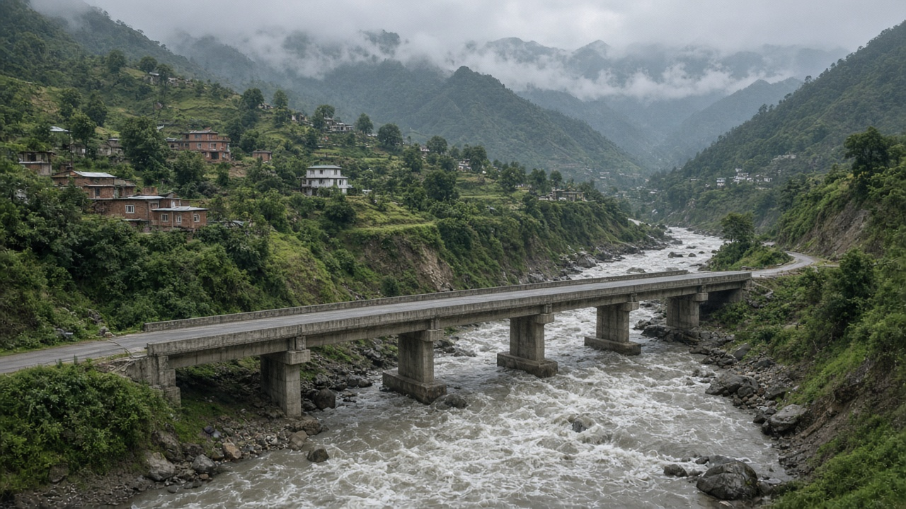
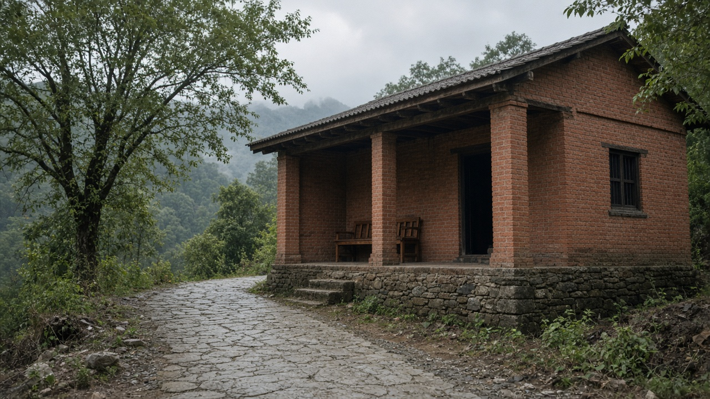
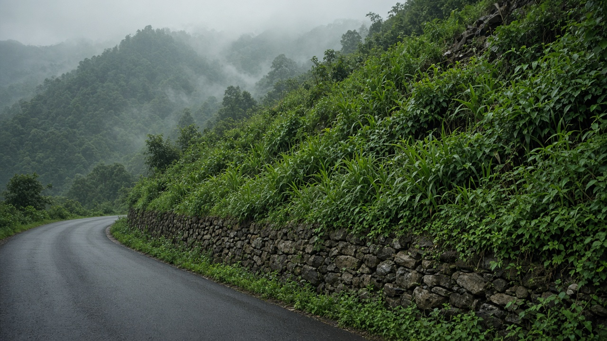

Climate-Resilient Urban Infrastructure
Published on August 20, 2026

Climate-resilient urban infrastructure is designed for hotter days, heavier downpours, longer dry spells, and shifting landslide seasons—not only for yesterday’s averages. Roads, bridges, drains, power lines, clinics, and schools fail together when one flood or heatwave exceeds old design standards. Resilience means redundancy, safe failure, and the ability to restore service quickly: alternative routes, elevated equipment, backup power for hospitals, and materials that tolerate heat and moisture. Nature-based elements—river setbacks, urban wetlands, slope vegetation—work with grey structures instead of being treated as optional landscaping. In Nepal, valley towns face monsoon flash floods and winter dryness, Terai cities face heat and inundation, and hill bazaars face slope failure after intense rain.
Asset management is the unglamorous core. Inventories of culverts, retaining walls, and transformers, with condition ratings and climate risk overlays, tell municipalities where to reinforce first. Raising critical facilities above flood levels, shading outdoor waiting areas, and specifying cool pavements cost less than repeated emergency repairs. Standards should be updated with new rainfall intensities and temperature extremes rather than copied from older codes. Informal neighbourhoods need the same attention: a clinic on a safe plot is useless if the only access lane washes out. Maintenance contracts that include monsoon inspections prevent small cracks from becoming washouts.
Finance and governance decide whether resilience is a slogan. Municipal budgets should ring-fence preventive works, and national transfers can reward local governments that map risk and protect corridors. Public works departments need hydrologists and geologists beside civil engineers. Community drills and clear roles during heat and flood events turn hardware into lived safety. Success is counted in hours of service kept during extremes, reduced damage bills, and whether the poorest wards recover as fast as commercial centres. Climate-resilient cities treat infrastructure as a system that must bend with a changing monsoon, not a set of isolated projects.

जलवायु-लचिलो सहरी पूर्वाधार हिजोका औसतका लागि मात्र होइन तातो दिन, भारी वर्षा, लामो सुख्खा र सर्दै गएको पहिरो मौसमका लागि डिजाइन हुन्छ। सडक, पुल, नाला, बिजुली लाइन, क्लिनिक र विद्यालय सँगै असफल हुन्छन् जब एउटा बाढी वा ताप लहरले पुरानो मापदण्ड नाघ्छ। लचिलोपन भनेको वैकल्पिकता, सुरक्षित असफलता र सेवा चाँडै फर्काउने क्षमता हो: वैकल्पिक बाटो, उठाइएका उपकरण, अस्पतालका लागि ब्याकअप बिजुली र ताप तथा ओस सहने सामग्री। प्रकृति-आधारित तत्व—नदी दूरी, सहरी सिमसार, भिर वनस्पति—खैरो संरचनासँग काम गर्छन्, ऐच्छिक बगैंचा होइनन्। नेपालमा उपत्यका सहर मनसुन झट्ट बाढी र जाडो सुख्खा, तराई शहर ताप र डुबान, पहाडी बजार तीव्र वर्षापछि भिर असफलता भोग्छन्।
सम्पत्ति व्यवस्थापन नचम्कने सार हो। पुलिया, अड्याउने पर्खाल र ट्रान्सफर्मरको सूची, अवस्था श्रेणी र जलवायु जोखिम तहसँग, नगरलाई कहाँ पहिले सुदृढ गर्ने बताउँछ। बाढी सतहमाथि अत्यावश्यक सुविधा उठाउने, बाहिरी प्रतीक्षा छायाँ दिने र चिसो सतह तोक्ने खर्च बारम्बार आपत्कालीन मर्मतभन्दा कम छ। मापदण्ड नयाँ वर्षा तीव्रता र ताप चरमसँग अद्यावधिक हुनुपर्छ, पुरानो नियमावली नक्कल होइन। अनौपचारिक छिमेकलाई उही ध्यान चाहिन्छ: सुरक्षित प्लटको क्लिनिक व्यर्थ हुन्छ यदि एक मात्र पहुँच गल्ली बग्छ। मनसुन निरीक्षण समेट्ने मर्मत सम्झौताले साना दरार बहाव बन्न रोक्छन्।
वित्त र शासनले लचिलोपन नारा हो कि होइन तय गर्छन्। नगर बजेटले रोकथाम काम छुट्याउनुपर्छ र राष्ट्रिय हस्तान्तरणले जोखिम नक्सा गर्ने र करिडोर जोगाउने स्थानीय सरकारलाई पुरस्कृत गर्न सक्छ। सार्वजनिक निर्माण विभागलाई निर्माण अभियन्तासँगै जलविद् र भूगर्भविद् चाहिन्छ। ताप र बाढी घटनामा सामुदायिक अभ्यास र स्पष्ट भूमिका भौतिक उपकरणलाई बाँचेको सुरक्षा बनाउँछन्। सफलता चरममा टिकेका सेवा घण्टा, घटेको क्षति बिल र सबैभन्दा गरिब वडा व्यापारिक केन्द्र जत्तिकै चाँडै निको हुन्छन् कि भन्नेमा गनिन्छ। जलवायु-लचिलो शहरले पूर्वाधारलाई बदलिँदो मनसुनसँग झुक्ने प्रणाली मान्छ, अलग आयोजनाको थुप्रो होइन।

जलवायु-लचीली शहरी अवसंरचना कल के औसत के लिए नहीं, गर्म दिनों, भारी वर्षा, लंबी सूख और सरकते भूस्खलन मौसम के लिए डिज़ाइन होती है। सड़क, पुल, नाले, बिजली लाइनें, क्लिनिक और विद्यालय साथ असफल होते हैं जब एक बाढ़ या ऊष्मा लहर पुराने मानक पार करे। लचीलापन का अर्थ वैकल्पिकता, सुरक्षित असफलता और सेवा जल्दी लौटाने की क्षमता है: वैकल्पिक रास्ते, उठाए उपकरण, अस्पतालों के लिए बैकअप बिजली और ऊष्मा तथा नमी सहने वाली सामग्री। प्रकृति-आधारित तत्व—नदी दूरी, शहरी आर्द्रभूमि, ढलान वनस्पति—धूसर संरचनाओं के साथ काम करते हैं, वैकल्पिक बाग नहीं। नेपाल में घाटी नगर मानसून अचानक बाढ़ और सर्दी सूख, तराई शहर ऊष्मा और डूबान, पहाड़ी बाज़ार तीव्र वर्षा बाद ढलान असफलता झेलते हैं।
संपत्ति प्रबंधन बिना चमक वाला सार है। पुलिया, रोक दीवार और ट्रांसफ़ॉर्मर की सूची, दशा श्रेणी और जलवायु जोखिम परत के साथ, नगर को कहाँ पहले सुदृढ़ करना है बताती है। बाढ़ तल से ऊपर आवश्यक सुविधा उठाना, बाहरी प्रतीक्षा छाया देना और ठंडी सतहें निर्दिष्ट करना बार-बार आपात मरम्मत से सस्ता है। मानक नई वर्षा तीव्रता और तापमान चरम से अद्यतन होने चाहिए, पुरानी नियमावली की नकल नहीं। अनौपचारिक मोहल्लों को वही ध्यान चाहिए: सुरक्षित प्लॉट का क्लिनिक व्यर्थ है यदि एकमात्र पहुँच गली बह जाए। मानसून निरीक्षण समेटने वाले रखरखाव समझौते छोटी दरारों को बहाव बनने से रोकते हैं।
वित्त और शासन तय करते हैं कि लचीलापन नारा है या नहीं। नगर बजट को रोकथाम काम अलग रखना चाहिए और राष्ट्रीय हस्तांतरण जोखिम नक्शा करने तथा गलियारे बचाने वाली स्थानीय सरकारों को पुरस्कृत कर सकते हैं। सार्वजनिक निर्माण विभाग को निर्माण अभियंताओं के साथ जलविद् और भूगर्भविद् चाहिए। ऊष्मा और बाढ़ घटनाओं में सामुदायिक अभ्यास और स्पष्ट भूमिका भौतिक उपकरणों को जिया हुआ सुरक्षा बनाती हैं। सफलता चरम पर टिके सेवा घंटे, घटे क्षति बिल और इस बात में गिनी जाती है कि सबसे गरीब वार्ड व्यापारिक केंद्र जितनी जल्दी उबरते हैं या नहीं। जलवायु-लचीले शहर अवसंरचना को बदलते मानसून के साथ झुकने वाली प्रणाली मानते हैं, अलग परियोजनाओं का ढेर नहीं।